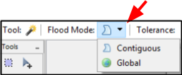
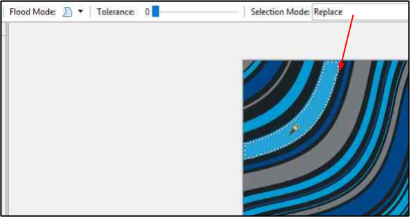
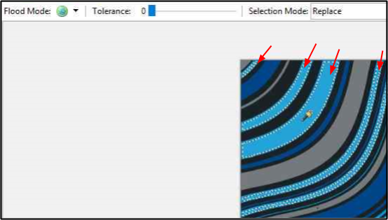

Magic Wand¶
The Magic Wand selection tool is ideal for when you want to select a similar colour section of an image without having to trace its outline. Unlike other selection tools that select pixels based on shapes (Lasso, Ellipse or Rectangle tools) the Magic Wand selects pixels based on color. For example you may wish to change a particular blue section or all the blue sections in an image to a different colour. The region selected may be a single continuous shape or multiple separate areas.
How to Use Magic Wand¶
-
Select the Magic Wand Tool
 from the Tool Menu options.
from the Tool Menu options. 
-
Specify the Tolerance setting in the Tolerance bar (0-100). The higher the selected tolerance (color range), will encompass a higher relative spectrum of colors compared to the original color you click.

-
Specify a Selection Mode in the options toolbar. You can use shortcuts to temporarily switch between them.

- Replace: Newly created selection cue will replace the existing one (this is the default mode) .
- Union: Newly selected regions will be added to the existing selection.
- Exclude: Clicking inside an existing selection removes an area from the selection, depending on currently set tolerance level.
- Xor: Selects areas around existing selection, when you click inside it.
- Intersect: Clicking inside an existing selection replaces it with selection under the cursor, depending on the current tolerance level.
-
Specify under the Flood Mode one of the options (Contiguous or Global).
- Contiguous: Choose this option to select all parts of the image with the similar color that is touching the selected portion.
- Global: Choose this option to select all parts of the image with the similar color (within the tolerance level)regardless of whether they are touching the selected portion.
-
Position the wand tool over the color region you would like to select and then click on the region.
Example: Magic Wand with Contiguous Option Selected

Example: Magic Wand with Global Option Selected
